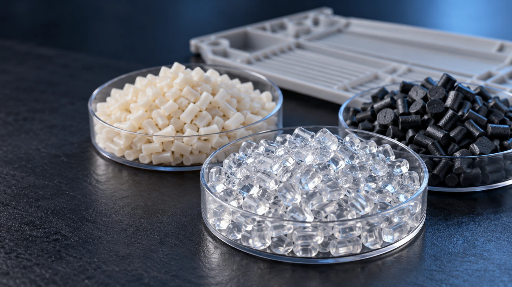

Anti-kuning & pelapukan
Diskusikan sistem stabilizer dan perilaku warna seputar paparan UV, oksidasi termal, dan masa pakainya.
Diskusikan kebutuhan material →Pilih bahasa

TECHINHERIT / BAHAN
TEKNOLOGI MATERIAL FUNGSIONAL
PENAMPILAN YANG DISESUAIKAN
Enam area diskusi umum diambil dari kemampuan fungsional-material dan rekayasa Techinherit.
Diskusikan sistem stabilizer dan perilaku warna seputar paparan UV, oksidasi termal, dan masa pakainya.
Diskusikan kebutuhan material →Kembangkan diskusi kontrol statis seputar target resistensi, lingkungan, dan sifat struktural.
Jelajahi arah material →Pertimbangkan kondisi penguatan, distribusi serat, dan pencetakan bersama-sama untuk menilai dimensi dan kerataan.
Diskusikan kebutuhan material →Tentukan pasar target, media kontak, durasi, dan suhu untuk merencanakan validasi yang sesuai.
Diskusikan kebutuhan material →Membedakan layanan kontinu dari paparan jangka pendek dan mempertimbangkan kebutuhan penyangga beban pada suhu.
Diskusikan kebutuhan material →Diskusikan senyawa dan validasi sampel terkait suhu rendah, kondisi benturan, dan lingkungan operasi.
Diskusikan kebutuhan material →Petunjuk fungsional bukanlah jaminan kinerja universal. Konfirmasi nilai, kesesuaian, dan metode validasi untuk proyek spesifik.
MATERIAL / TEKNIK / KEMUNGKINAN